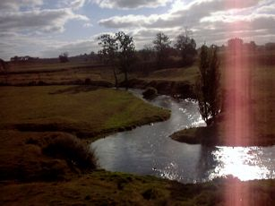
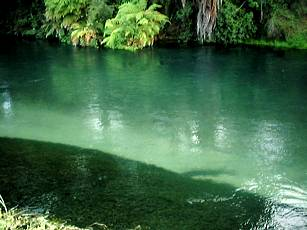

エッセイ
続 ラボから来た男
観光客の一団の向こうに長いロッドケースが見えた。厳しい検疫を意外と早く済ませ、川本君が到着ロビーへと流れ出てきたのだ。
「久しぶりっ！」
「いやぁ、長かったねぇ！」
「検疫は無事に済んだ？」
「うん、なんとか。ウェーディングシューズは新品だし。」
太平洋を越え、遠路はるばる11時間以上を飛んできた旧友を迎えた私は、いそいそと彼のロッドケースを抱え、あいさつもそこそこにオークランド空港のビルを出る。駐車料金の支払機のそばに、特大のトランクが二つ載せられたトロリーが置いてあるのが目に入った。
『ん？ どこかで見たような.........』
立ち止まってよく考えれば、そのトランクに付けられたカナディアン航空の荷物ラベルから、あの出来事が思い浮かんだはずだったが、これから一週間、旧い釣友と気ままな釣りの旅に出かける興奮が、そんなささいなことを吹き飛ばしてしまった。
３年前、ウェストコーストを訪れた先回の釣行時よりもぐっとコンパクトにまとまった川本君の荷物を私の車に積み込み、300km南にある古い小さなホテルを目指す。
翌朝、ふたりとも７時に目がさめた。昨夜は久しぶりの再会を祝してホテルのバーでいささか飲みすぎたものの、ここから歩いて５分もかからない農場内を流れるスプリングクリークの情景が、二人をたたき起こしたのである。
ちょっと脂っこ過ぎるベーコンが気になったが、ホテルの朝食もそこそこに、ワクワクと早まる鼓動にせかされるように身支度を整え、ホテルの脇から農道へと歩み出す。一言声を掛けようと思ったが、ここから見えるロバートさんの家は、どうやら留守のようだ。
電流に注意しながら牧場のフェンスを越えると、すぐに蛇行した川が見える。ここから上流数キロが、私のもっとも好きな区間である。川本君に、右手に降りていった先の大きな淵から釣り始めるようアドバイスして、自分は大物の魚影を探しながら川沿いを上流に向かうこととする。

数分も歩かないうちに、下流で歓声が聞こえ、川本君のロッドがひゅんひゅんとしなっているのが見えた。よしよし。僕らの夏が始まった。
午前中の釣りで、川本君が十分満足するほど「数」は出たものの、この流れのレギュラーサイズである30cm級がほとんどである。いくら元気の良い、鰭の美しい野生の虹鱒たちが相手をしてくれたとは言え、これでははるか8,000kmをジェット機で越えてきた友人に対してちょと申し訳ない。しかし、この先の左カーブを曲がったところにある長い瀬なら、いつも必ず大物が居着いているからと安心し、まずは腹ごしらえのサンドイッチを食べることにする。
左カーブの所に出来ている浅い淵の回り、特に向こう岸の開きを丁寧に攻めるよう川本君に伝え、私は一足先にカーブの向こうを探ることにする。先週下見に来たときには、長い瀬のストレッチに沿って密生した藻のテーブルの中に、ゆらゆらと定位するボリュームのある背中が少なくとも３つは数えられたのであった。
『今日も居てるかナ.........』
期待を胸にカーブを曲がると、岸辺に立ち込んでいる人影が見えた。
『ありゃ！ これはイカン。先行者だぞ......』
いきなり予定が狂ってどぎまぎしたものの、どうやらその人影は、釣り人ではないらしい。といって、ロバートさんが撒水ポンプの世話をしているのでもない。
『おかしいなぁ、こんな辺鄙なところでなんだろう？』
件の人物は、釣り人の使う腰まであるウェーダーを履き、そろそろと何かの塊を水中に沈めている。その塊からは、長いコードのようなものが出て、岸から離れたところに設営された中型のテントに続いている。
川本君が来るまでにはちょっと間があるので、そろそろと身を隠しながらその人物が見下ろせる牧草地の中の高台へ登り、一部始終を偵察することにした。別に隠れる必要は無いのだが、彼の一心不乱な作業の仕方に、なにか触れてはいけないようなものを感じたのだ。
高台に登ってから、あまたある牛の糞に気を付けつつ腹這いになり、タスコの単眼鏡で「彼」に狙いを付ける。先週の下見の際、50cmに近いのではと思われるグラマーが定位していた、まさにその下流１メートルほどの場所で、男は、樹脂製のような黒い箱を川底に沈め、慎重にその箱の位置を調整している。と、よく見てみると、岸すれすれの藻のベッドの上にも同様の黒い箱が沈めてある。
『いったい何だろう、あの箱は？』
コードが伸びていることから考えれば、何か計器のようなモノには違いないが、あれほど慎重に位置を定めているのが不思議である。

いずれにせよ、あんな大仕事をあのポイントで始められては、私の目論見が根本から崩れたのは間違いない。と、下流から川本君が岸沿いに歩いてくるのが見えた。大きく手を振ってこちらに誘導する。彼も、その場に漂う緊迫感を関知したらしい。
「伊藤さん、何やってるのあの人？」
「いやぁオレにもわからんのだわ.....なにやら調査してるみたいだけど」
ひょっとするとFish & Gameのスタッフが、ドリフトダイブに変わる何やら新手の調査方法を考え出したのかも知れないが、それにしては人数が少ない。眼下の人物は、たった一人で頑張っているのである。
「困っちゃったなぁ、ここは当てにしていたポイントなんだよ」
「あれ、なにか黒いモノが沈んでいるよ」
川本君もアレに気付いたかと思って彼の指さす方向を見ると、今男の作業しているポイントからさらに上流にも三カ所、二つずつ黒い箱が鎮座している。そして、そのポイントは、先週鱒がいた場所とほとんど一致しているのだ。
『うーん、一体何を.......』
男の目論見がわかるまでいつまでも見ているわけにも行かず、川本君と二人、さらに上流を目指すことにする。結局、その日の午後は、38cmのレインボーが釣れたのが最大であり、この川としては中型クラスにとどまった。川本君としては、38cmとは思えないほどの引きを楽しめたのでまずまずの一日だったようだ。しかし、釣果は別にしても、午後はなぜかあの男のことが気になって釣りに気合いが入らなかったのも事実であった。
二日目は、別のスプリングクリークを釣り、三日目の今日、例の男が居たポイントの上流で対岸に渡り、まだ釣っていない支流を釣ることにした。
ロバートさんの家の横を通るときに、彼の車が庭先に停めてあったので一言挨拶をしてゆくことにした。
「こんちわぁ～」
「いよぉ、グッダイ！」
「今日も釣りに来ました。通らせて下さい。実は一昨日も来たんですけどね」
「ああ、いいともよ。しかしお前らも好きだな！」
それじゃぁ、ということで川へ向かうと、家に入りかけたロバートさんが不意に、
「おーい、彼に会ったか？」
と訊ねてきた。
「彼って？」
「この上流で、いろいろ店広げてる男だよ。ドクって名乗ったぞ」
『ドク！ あの男だったのか！』
ロバートさんの言葉が終わらないうちに、ドクという名の響きがカナディアン航空の荷物ラベルと結びつき、一転して脳裏に四年前の真冬の管理釣り場の光景が広がった。
彼の話では、四日前の夕方、あの男が玄関先に現れ、川でいろいろと調査したいから農場へ入らせて欲しい。さらに、機材を運ぶのを手伝ってくれないかともちかけられたそうだ。翌朝電話があり、私達の泊まっているあのホテルの玄関まで迎えに行くと、そこにはうずたかく積まれた機材が.........。
「いやぁ運んだ運んだ。四輪バギーで８往復もしちゃったぜ。何を調べるのか知らんけどさ。ま、手間賃だってことで思ってもみなかったほどたくさん弾んでくれたから女房は喜んでたけどな。クリスマスも近いし。」
ドクが「調査」をするってのならそのくらいやりかねないと思いつつ、早く釣りを始めたそうな川本君を横目で見て、それじゃ行って来ますと、ロバートさんの家を後にした。
例の長瀬の上流で川本君を向こう岸に渡し、この先で合流する支川を釣り上がるように教える。
「この先の支川は、ずぅっと右岸を釣り上がれるから大丈夫。2kmほど釣り上がると大きな二本松があるからそこで昼にしよう。フライは昨日と同じでいいよ。俺はストリーマーでちょっと下流を探ってから後を追うよ」
あの「ドク」が今度はニュージーランドくんだりまでやってきて、しかも私達と同じホテルに泊まり、同じ川で何を始めたのかという好奇心がムクムクムクッと沸き上がり、川本君への指示もそこそこに長瀬のポイントへと戻る。無論、今日はストリーマーを引く気は全くない。
長瀬を一望に見下ろせる例の高台に着くと、男は、いや、すでに正体の判明した「ドク」は、テントの前でなにやらひざまずいている。今日は快晴なのでテントの前半分が開け放たれており中身が丸見えである。ドクの眼前からテント内にかけて、あの時以上に雑多な機材が積み上げられている。
それらは、分かったものだけで言えば、中型のカラーテレビモニタ一台、小型のモノクロモニタ二台、ビデオデッキ一台、その下の画像入力切替機、水温計・溶存酸素計のモニタ部分、マジェランのハンディGPS、液晶画面に地図の写ったIBMのノート、ラジコン送信機に付いているようなレバーが８ヶ付いた操作盤、SWOFFERの携帯式小型流速計、小振りなコーヒーテーブルの上には精密小型秤とタイイング用具一式、テントの奥には寝袋が押し込まれている。まだ何かあってもおかしくはない。さらに、テントからはるかかなたまで延々と伸びる別の黄色いケーブルの先には、ホンダの小型発電機が見える。川からあれほど離して置いてあるのは、おそらく騒音と振動が川の中に響かないための工夫であろう。
ドクは、おおよそのセッティングが済んだのか、カラーモニタの前に座り込み、８つのレバーの付いた操作盤をなにやらまさぐっている。
『ははぁ、どうやらあの黒い箱はビデオカメラのケースらしいぞ.......』
およそ50mの区間に、軸が直角になるように２台一組で４カ所、計８台設置された水中カメラが捉えた映像は延々と伸びる黒いケーブルでテントまで運ばれ、入力切替機を通してモニタに写しだされる仕組みだ。操作盤のレバーを動かすと、上下左右にある程度パンとティルトが利くらしい。レバー端部のつまみの回転はカメラのフォーカスとズームに対応しているのであろうか。
『ジャッカル』みたいになっちゃったな......とはるか高台の上でギャラリー約１名がぶつぶつ言ってるのには気づくはずもなく、ドクは調整を続けてゆく。
『しかし、一昨日あんなにあたりを騒がせてカメラを沈めてたけど、そうそううまく鱒が戻ってくるのかな？』
と、外野の心配をよそに、下流から二番目のカメラのそばに、例の大物らしい魚影がゆらゆらと現れるのが目に入った。
『おっ、これはこれは！』
あまたあるニュージーランドの川の中から、透明度の高さと、魚影の濃さから推察してこの川にターゲットを絞ったドクの読みに間違いはないらしく、50cmを越えたか越えないかというレインボーが、頬の赤みも鮮やかに、川底に沈められたビデオカメラのケーシングの前に定位した。ときおり左右に動き、ニンフをくわえるために口を開けるのが白くはっきり見える。
ドクは、と言えばいつのまに設置したのかカメラの下流にたなびくドリフトネットまで密かに近寄り、現在流下している水生昆虫をチェックしている。そして、ネットから再び抜き足差し足で戻った彼は、精密秤で慎重に巻いたばかりと思われるニンフの重量を量り、なにやら電卓で計算をしている。どうやら流速データとニンフの沈下速度との比較チェックをしているらしい。
どんな複雑な計算式が用いられたのか知らないが、最終的に何の変哲もない14番のビーズヘッド・フェザントテールを選んだドクは、テントの奥からパックロッドのケースを取り出した。いつぞやは極めて古いフェンウィックを使っていた彼であったが、今日はブランクの色も妖しげに黒光りする真新しいコンポジットディベロップメント社製ロッドを取り出した。
『お、ニュージーランド製か。いいとこあるやん........』
ドクがロッドを支度するしぐさが前回と較べてはるかに洗練されたところを見ると、これまでカナダで、あるいは世界各地で、並々ならぬ修練を積んだものらしい。見る間にロッドとリールをセットし、ラインとリーダーを結び、長めのティペットの先には例のフェザントテールを結ぶ。なぜかインジケーターは無い。８倍の単眼鏡で見ていると子細漏らさずドクの動きが見えるのである。
魚の居所も押さえた。フライも選んだ。ロッドは新品。あとは釣るだけだな、ドク。と応援しつつも、心中では、
『そんなにたくさんの機材を使わなくても、モノキュラーがあれば、いや裸眼だって十分魚は見つけられるんだよ.....』
と、彼のこれまでの努力を全て無にするようなお節介をつぶやく私にはかまわず、ドクは、いそいそと、しかし着実に身支度を整える。
『あ！ やられた！』
装備を続けるドクは、幅広のナイロンベルトに装着された携帯型のビデオカメラ遠隔操作盤をテントの奥から取り出し、腹部に装着した。さらに、同様の入力切替機を腰に付け、極めつけの一品を頭部に付けた。日本のあるメーカーが開発し、どこぞの航空会社のビジネスクラスにはすべて装備されたというゴーグル形態のビデオプロジェクターである。恐ろしいことには、超小型のCCDカメラも側部に追加されており、あのプロジェクターを外さなくても周囲の様子が見えるらしい。
『その手があったか！』
フライラインに編み込んだ超小型カメラのケーブルもろともキャストし、短いリーダーの先に結んだストリーマーで冬の管理釣り場の底深くに沈んだ養殖虹鱒を釣る、といういささか釣趣に欠けたあのスタイルから脱却し、盛夏のニュージーランド、全てが輝くスプリングクリークの流れの中で、フライの流下から鱒の一挙一動まで一望に捉えながら、まさに魚と同等の視点から、繊細なニンフフィッシングを味わおうというのか！
長いケーブルをずるずると引きずりながら、ドクがキャスティングポイントへと立ち込んでゆく。操作盤の類は水に弱いので、慎重な動作が要求されるのであろう。少し下流から回り込み、そろそろと鱒との間合いを詰めてゆく。彼の得意な距離まで、静かに、静かに歩み寄ってから、いよいよドクがゴーグルを目に装着した。入力信号を下流から二番目のカメラに切り替え、左手をおなかの操作盤に載せ、スティックを微妙に動かしつつ鱒を捉えようと試みる、のであろう。
どうやら思い通りの映像が得られたらしく、いったんビデオ入力を外部風景用CCDに切り替えたドクがいよいよロッドを振りかぶる。一投。二投。三投。すかさず入力信号を水中カメラに切り替え。かなりいい線をニンフが流れているようなのだが、狡猾な大物はなかなか食らい付かない。きっと、これまでに数回は毛針に騙されたことがあるに違いない。
数回のキャスト。鱒が少し上流へ移動。カメラの視界の調整。さらにキャスト。再び鱒が下流へ移動。またまたビデオカメラの操作。
こんなことを繰り返しているうちに、ゴーグルを外したドクはいきなり口に手を当てながら岸辺に歩み寄り、草むらに顔を伏せた。
この距離では、苦悶の音は聞こえなかったものの、彼の苦しみは十分理解できた。それでなくてもあのホテルの朝食は脂っこいのだから、10分もあんなプロジェクターで水中の映像を注視し続けていれば誰だって気持ち悪くなるだろう。
出るものを出し切ったドクは、しばらく呆然と岸辺に座り込んでいたが、どうやら元気を取り戻したらしく、再び流れの中に立ち込み、敢然とゴーグルを装着し、ロッドを構えた。
ドクが水中の様子に集中し始めたのを見計らって、テントの前まで牧草の斜面をすべり降りる。悪いとは思いつつも、カラーモニタに写る映像をどうしても見てみたかったのだ。
12インチのSONYの中には、まるで自分自身が、スプリングクリークの川底に蠢く１尾の淡水ザリガニになったような光景が広がっていた。今はドクが下流側のカメラからの映像を選んでいるらしく、上流、というか上空１メートルほどの位置にレインボーの腹部が灰色の影となって浮かび、時折流下する小さな物体に、驚喜のごとく反応している。ふと、画面が切り替わり、岸沿いの浅場に沈めた別のカメラからの映像が入る。カメラとほぼ真横で、やや上側に定位した鱒の赤い頬が、水族館のガラス越しのように鮮やかに見える。翼のような胸鰭や、顎の中の小さく、しかし鋭い歯も見える。
ドクは、映像を横からのカメラに固定し、鱒とカメラの間にニンフを流すことに決めたらしい。さっき高台から見た限りでは、鱒とカメラとの距離は1.5mほどあったようだ。この鮮明さで写せるのであれば、鱒がニンフをくわえる瞬間はどうしたって判るであろう。
すべてをゴーグル型プロジェクターに頼るのは気持ち悪いのだろう、いったんゴーグルを上げたドクが、ラインを繰り出し、ロッドを振り上げ、ニンフをキャストする。水面に波紋を作りニンフが投射されるとすぐゴーグルを下げ、映像に目を凝らす。沈みゆくティペットがかなりはっきりと白く光って写り、その先のフェザントテールが画面に現れた瞬間、鱒の頬の紅色が揺らめき、次の動作で口を大きく開け、ニンフが吸い込まれた。
一瞬、身を凍らせたかのように動きを止めたレインボーが、身体を一閃してすぐに画面から消えた。ゴーグルをずり上げたドクが、懸命にロッドを立ててこらえる中、ジジジジジとドラグを鳴かせながらゆっくりラインを引き出して鱒が上流へ向かう。いったん岸辺に歩み寄ったドクが、ナイロンのハーネスで身に付けたカメラの操作盤と入力切替機を慎重に外して草の上に置き、いよいよファイトが始まった。
身軽になったドクは、丁寧に、しかし頑強に抵抗しながらリーリングを始める。上流の深みに逃げ込んだ鱒が、こちらも慎重に反撃の機会を狙っている。ラインを巻き取りながら五、六歩あゆみ出したドクの眼前を、矢のように魚影が下流へダッシュしてゆく。これまで上流側で抵抗していた鱒が、ついに下流へ突進したのである。再びジリジリジジジーとドラグが鳴り、長い瀬を一気に下って左曲がりの淵に突っ込んだ。慌てて下流へ走るドクの足にビデオカメラのケーブルが絡んでドウ！と倒れる。
『うわっ！ ありゃまずいっ！』
彼の後を追ってランディングを助けることもできるのだが、私のネットが小さ過ぎることもあり、ぐっと我慢して沈黙の声援を送るのにとどめる。
倒れ込んだドクは、少しも怯まず、すぐに立ち上がりロッドを立てながら鱒を追う。気づかれないように、もつれ合う一人と１尾の後を追いつつ、私も駆け出す。
淵の弛みの中で抵抗する鱒に、少しだけ優位に立ったドクが慎重にあしらっている。上流への最初の突進、下流への第二の逸走を経て、ようやくおとなしくなった鱒が、水面に鼻面を出した。渕尻に立ち込んだドクが、慣れたロッドさばきで鱒を寄せ、静かに魚の腹部を手で支えた。鮮やかな紅色の頬が、ハクッハクッと大きく息づいた。
しばし、幸福な沈黙の中に身を置いたドクが、そっとニンフを外すと、鱒はそろりと深みに消えたようだ。声を掛けたくなるのをじっと我慢していると、かなり長い間、水面を見つめていたドクが、不意に振り返った。
「やりましたねっ！」
さっき、一抱えもある茶色の固まりの上にもろに倒れ込んだドクが、胸の辺り一面をドロドロに飾りながらも、懐かしい笑顔でニカッと笑い、
「見て釣るニンフは面白い」
と、言った。
今夜は、ロバートさんも誘って、あの旧い小さなホテルのバーで、ドクの武勇伝を聞きながらビールを浴びることにしよう。
エッセイ 目次へ
サイトマップ
ホームへ
お問い合わせ